@Autowired的使用
点开@Autowired注解看一下说明。
该注解可以标注在构造器，属性和setter方法或者配置方法上面。
一个bean最多有一个构造器上面标有这个注解，当Spring注册bean的时候会用这个构造器。
属性注入是在构造方法后，配置方法执行前注入。
还可以在配置方法上使用这个注解，配置方法可以是任意的名字和任意多个参数，每个参数都会在spring容器中找到对应的bean进行注入。上面的setter只是配置方法注解的一个特殊例子。
如果注入的是map类型的，那个map的key要和注入bean的名字一样，还可以排序，不然就会按照bean注册的顺序进行注入。
@Autowired上面的注释还说注入是通过后置处理器实现的，所以你不能注入通过@Autowired注入引用到BeanPostProcessor或者是BeanFactoryPostProcessor。其实这个说法不全对。点开@Autowired的后置处理器：AutowiredAnnotationBeanPostProcessor，可以看到这个类实现了PriorityOrdered接口，如果我们的类只实现了BeanFactoryPostProcessor接口，那么AutowiredAnnotationBeanPostProcessor这个后置处理器就会在只实现了BeanFactoryPostProcessor接口的类上面生效，即使是我们的类还实现了Ordered接口也会生效，但是这个时候要注意某些注解不生效的问题。举个例子，比如用到了@Async这个注解，支持这个注解的后置处理器是AsyncAnnotationBeanPostProcessor，看一下这个类的继承关系：
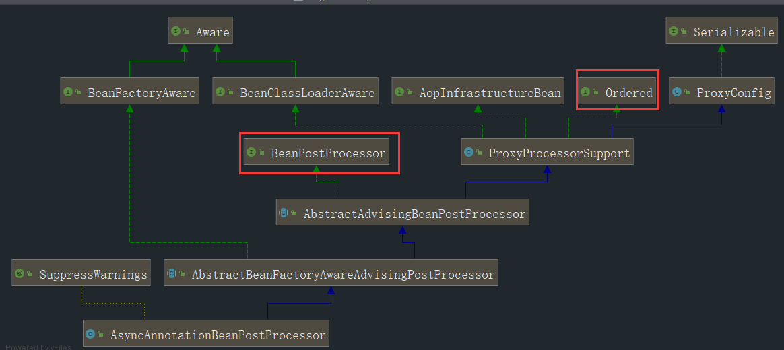
这个类继承的是BeanPostProcessor和Ordered，如果我们在实现了Ordered接口的后置处理器注入有这个注解的类引用时，那么@Async这个注解是不会生效的，感兴趣的同学可以先自行研究一下spring容器加载后置处理器的顺序。上面还说了BeanFactoryPostProcessor，注入实现了这个接口的类的时候，@Autowired是肯定不会生效的，因为这个是容器级别的后置处理器，刷新容器的时候早于BeanPostProcessor。
AutowiredAnnotationBeanPostProcessor类大概情况
点进去这个类，看到无参构造里面将三个注解加入到了autowiredAnnotationTypes里面：Autowired，Value还有JSR330规范的Inject(如果有的话)，也就是这个后置处理器同时做用于这三个注解。
看两个内部类：AutowiredFieldElement和AutowiredMethodElement。从名字可以知道一个是属性注入，一个是方法注入。起始从这两个类的inject方法的最后部分就可以看出，一个是反射设置属性，一个是反射调用方法，最终的落地都是反射。
再来看一个方法registerDependentBeans。处理依赖的，因为注入避免不了依赖。这个方法里面有一行代码：
1 | this.beanFactory.registerDependentBean(autowiredBeanName, beanName); |
将依赖的bean注到容器里面。
调试
测试的类还是上一次的几个类。
选两个入口断点：PostProcessorRegistrationDelegate的registerBeanPostProcessors。
AbstractApplicationContext的finishBeanFactoryInitialization。为什么是这两个，调一次容器加载就清楚了，这个不是本文的重点。
开始调试
来到第一个断点，AutowiredAnnotationBeanPostProcessor已经注册进去了
F9来到下一个断点，F7进去。
来到第一个for循环，打上断点：
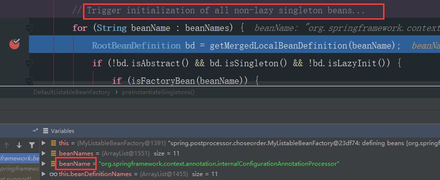
这个for循环是初始化非懒加载的所有单实例bean的。
我们关心的是@Autowired注解，所以一直放过F9，到beanName是targetInject才暂停。
在放行的过程中，可以看到普通bean是按照文件的名字初始化的。
来到targetInject，一直F8来到：
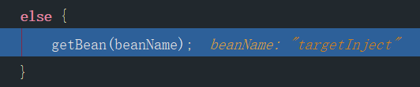
进去：getBean -> doGetBean ，下一步，早期检查单实例缓存有没有：
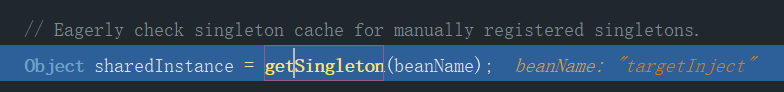
F7进去 getSingleton -> getSingleton ->getSingleton
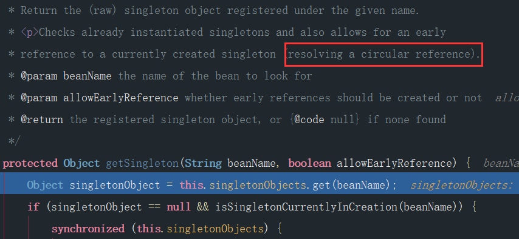
1 | protected Object getSingleton(String beanName, boolean allowEarlyReference) { |
这里就是三级缓存解决循环引用的地方。如果有两个bean相互引用了，spring的操作是将实例化完的bean放进singletonFactories这一级缓存，此时bean还没有初始化，有两个bean，B1和B2相互引用了，B1 create完实例后放到singletonFactories里面了，在装配B1的时候需要用到B2，发现容器中没有B2，于是就创建B2，创建好B2的实例，也放到singletonFactories里面，此时虽然有了B2，但是也不会回头去装配B1，因为流程都是一套一套的，要先走完B2，此时应该是装配B2，装配B2的时候发现需要B1，走到上面那个截图的地方，发现singletonObjects里面没有B1，但是B1正在创建中。这个正在创建中是怎么判断的呢，有一个方法beforeSingletonCreation，在bean创建之前会将bean的名字加到singletonsCurrentlyInCreation里面，然后还有一个afterSingletonCreation，在bean创建结束会将bean的名字从singletonsCurrentlyInCreation移除。
很明显B1是在singletonsCurrentlyInCreation里面，来到下一步，发现earlySingletonObjects里面也没有B1，再向下，发现singletonFactories里面有B1，于是将singletonFactories里面的bean实例提取出来放进earlySingletonObjects里面，从singletonFactories移除，进行提早曝光。至于为什么要从singletonFactories提取出来放进earlySingletonObjects里面，而不是直接从singletonFactories获取返回，个人的理解是进行不同创建流程的bean进行分区隔离，具体是不是这样，我们后期跟进这个earlySingletonObjects，如果有误，请多多指教。
继续向下，targetInject并没有循环引用，所以上面一步返回的是空，走普通流程，下一步。
这里有一个标记为已经创建：
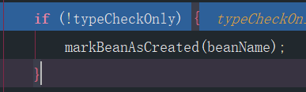
就是将bean的名字放进集合alreadyCreated里面。继续向下，来到：
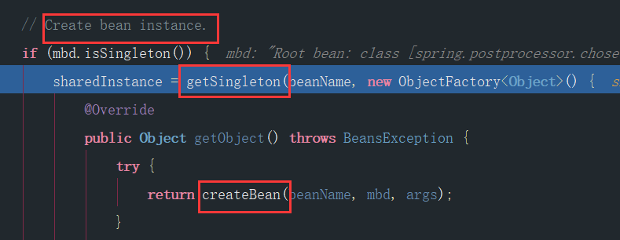
这里也是getSingleton，上面的getSingleton是从缓存里面拿，拿不到，这里就直接创建了。继续走，后面的都是bean的创建流程，不是本文重点，大致流程：createBean -> doCreateBean -> populateBean 先创建，再装配bean，装配的过程中会进行后置处理器的执行：
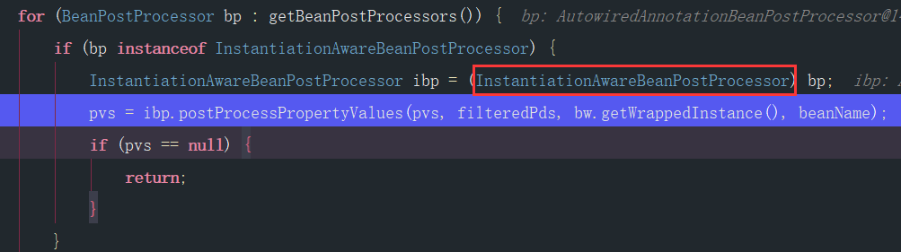
过滤初始化后置处理器，在最开始AutowiredAnnotationBeanPostProcessor的继承关系图里面看到了，这个类实现了InstantiationAwareBeanPostProcessor这个接口，进入实现的方法：
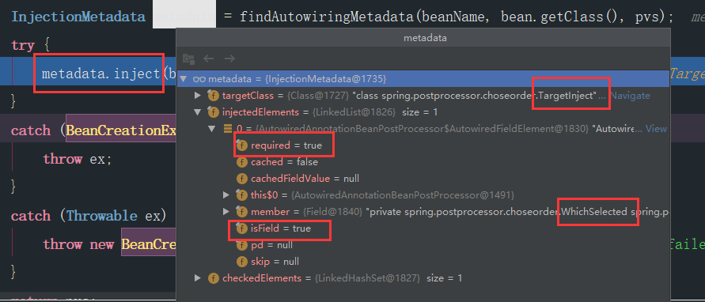
可以看到注入的元素据信息，required默认为true，注入的地方是field，属性注入。进到inject里面：inject -> element.inject，一直向下，来到这一行代码：
1 | value = beanFactory.resolveDependency(desc, beanName, autowiredBeanNames, typeConverter); |
解决依赖应该是注入最重要的一个环节之一。可以看到，解决依赖是在DefaultListableBeanFactory这个默认bean工厂里面进行的。来到这里：
1 | if (result == null) { |
进入doResolveDependency，寻找合适的bean：
1 | Map<String, Object> matchingBeans = findAutowireCandidates(beanName, type, descriptor); |
进入，这个方法上面的注释是：寻找匹配这个类型的bean实例。其实可以是实例，也可以是类，调试到后面会看到。
1 | String[] candidateNames = BeanFactoryUtils.beanNamesForTypeIncludingAncestors( |
这一句就是找到匹配的类型对应的名称，找到了三个：
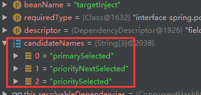
继续向下，来到这一段：
1 | for (String candidate : candidateNames) { |
这一段在上一篇说过了，主要是检查是不是自引用和是不是匹配的候选bean，是不是匹配的候选bean实际上就是判断一下是不是类型相同和检查是否标记了@Qualifier注解，如果标记了，当前bean是否和标记的bean名称相同。这里我们没有标记，向下：
进入这个方法：
1 | private void addCandidateEntry(Map<String, Object> candidates, String candidateName, |
从这里验证上面那句话，候选的不仅仅是实例，还可以是类型。如果当前候选bean已经实例化在容器中了，那么就将实例化的bean放进候选map中，如果没有的话，就将这个类加到候选map。这也就是为什么开始说容器加载bean默认是按照文件的顺序加载，TargetInject的首字母都是在三个候选bean的首字母P后面，感兴趣的可以将TargetInject前面加一个A，放在候选bean前面试试。
当然这里都是添加的实例：
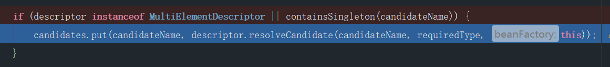
向下走，把三个都加进去。
走到这里：
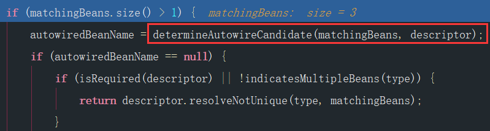
怎样选择候选的bean，在上一篇说过，这里直接过。我这里最终选出来的是prioritySelected，我用的是上一篇改造过的beanFactory，自己调试可能是primarySelected。
在返回这里还有一个关键步骤：
1 | return (instanceCandidate instanceof Class ? |
如果是Class类型，说明容器中没有找到注入的实例，点进去resolveCandidate：
1 | public Object resolveCandidate(String beanName, Class<?> requiredType, BeanFactory beanFactory) |
是一个普通的bean创建。最终返回的是一个注入实例。
继续向下，来到这一步：
1 | registerDependentBeans(beanName, autowiredBeanNames); |
将prioritySelected注册为targetInject依赖的bean。点到beanFactory的registerDependentBean已经说得很清楚了，是为了在被注入的bean销毁前销毁注入的bean。spring考虑得非常全。
最后一步，反射赋值：
1 | if (value != null) { |
结束。